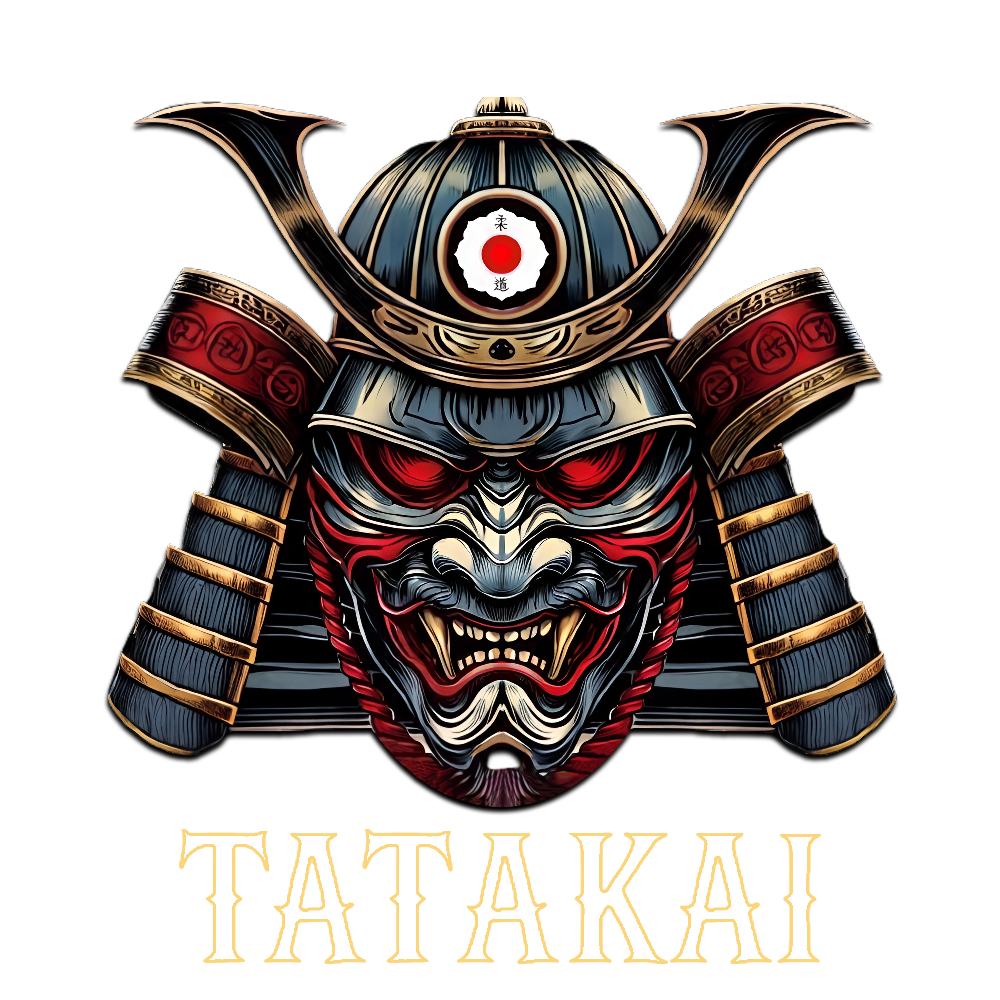
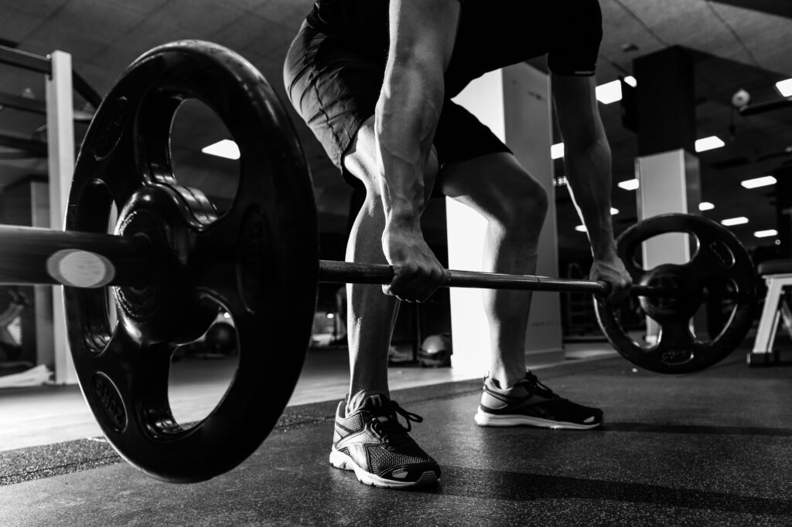

150mq di tatami tradizionale giapponese e tanto altro!
Siamo un'associazione sportiva dedicata principalmente alle arti marziali e al fitness. Offriamo corsi per ogni livello con istruttori qualificati e un ambiente professionale e amichevole.
Una sala pesi attrezzata di 150mq con macchinari all'avanguardia per un allenamento completo e personalizzato.
